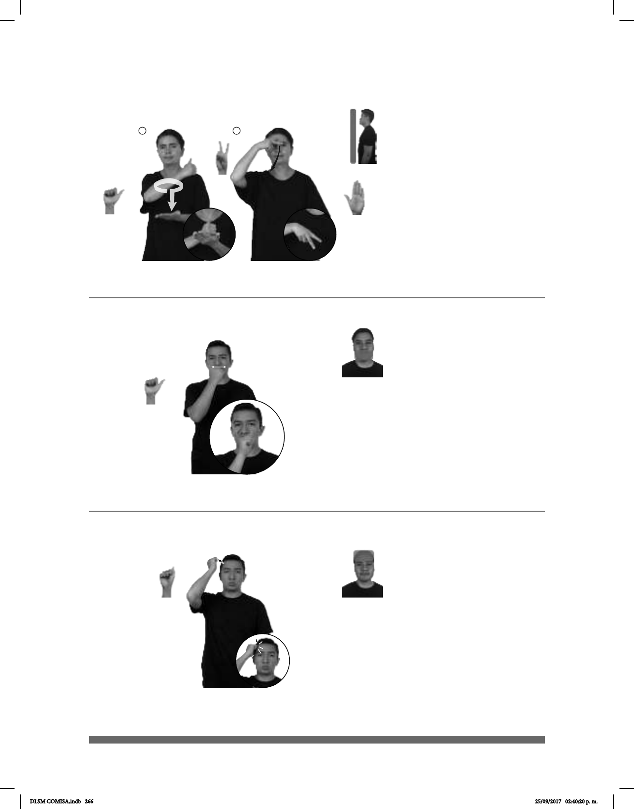

266
1 2
Seña: SC: I. SB; II. SM
I. MD A.1, MB B-P.2;
II. 2.1
I. MD palma hacia
dentro. MB palma hacia arriba; II. La
palma inicia hacia abajo y termina
hacia dentro.
I. MD y MB a la altura del
pecho; II. Inicia sobre la frente y
termina a la altura del pecho.
I. La MD se mueve
formando un círculo y después golpea
a la MB en línea recta; II. Recto hacia
abajo y hacia el frente.
Capital de los Estados
Unidos Mexicanos.
(A-100)
(A-101) Cocaína
Seña: SM
A.1
Palma hacia la izquierda.
A la altura de la nariz.
El antebrazo gira de derecha a
izquierda y cambia la orientación de la mano,
pasa de mostrar el dorso a mostrar el lateral.
Nariz fruncida, labios
protruidos.
Simula la acción de inhalar
cocaína.
sust. f. Alcaloide cristalino que se
extrae de las hojas de coca; se usa en medicina
como anestésico local, narcótico y dilatador de
ni control médico provoca adicción, que suele
conducir a la muerte, por lo que su venta está
estrictamente reglamentada y es un producto
(A-102)
Coco
COCAÍNA DROGA PELIGROSA
La cocaína es una droga peligrosa.
PLAYA MUCHOS COCOS pro-YO ENCONTRAR YA
En la playa encontré muchos cocos.
Seña: SM
A.5
Palma hacia dentro.
A la altura de la cabeza.
La MD golpea la
cabeza.
sust. m. Fruto de la
palma llamada cocotero, de unos
20 cm de diámetro; tiene una pulpa
blanda que se usa en la pastelería y
de la que se extrae aceite y el centro
hueco ocupado por un líquido muy
fresco.
DLSM COMISA.indb 266 25/09/2017 02:40:20 p. m.